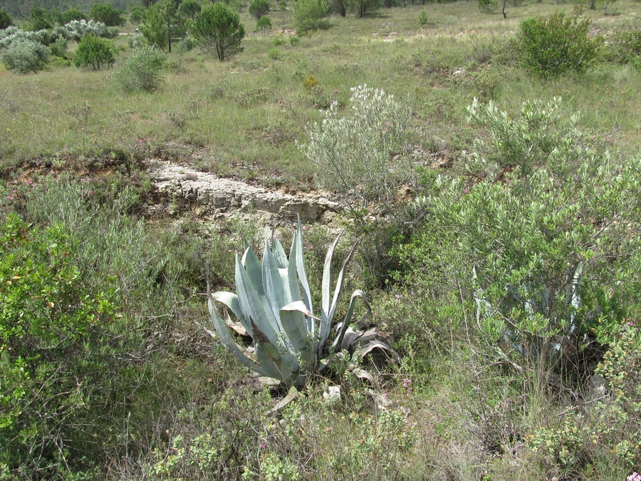

多肉植物 · 植物界
龙舌兰 Agave americana

天门冬科大型多肉植物，叶片剑形带刺、莲座状排列，一生只开一次花，原产墨西哥，可制纤维和龙舌兰酒。
- 分类
- 门被子植物门纲木兰纲目天门冬目科天门冬科属龙舌兰属
- 栖息环境
- 墨西哥与美国西南部的干旱高原与石质坡地，极耐旱
- 地理分布
- 原产墨西哥与美国西南部，现世界各地热带、亚热带地区栽培
- 保护级别
- 暂无评估
物种志
龙舌兰为天门冬科龙舌兰属多年生大型肉质植物，株高 1–2 米，茎极短。叶片剑形，长 1–2 米，灰绿色，肉质肥厚，边缘有锯齿状硬刺，顶端有粗壮的黑色尖刺，呈莲座状排列。花葶自植株中心抽出，高可达 8 米，顶端生大型圆锥花序，花黄绿色；开花后母株枯萎死亡。
龙舌兰原产墨西哥及美国西南部的干旱地区，喜阳光充足、炎热干燥的环境，耐旱力极强，在贫瘠的石质土中也能生长，但生长缓慢，常需十多年甚至几十年才开花。它的叶片纤维强韧，可制绳索和编织品；同属的蓝色龙舌兰是酿造龙舌兰酒的原料。龙舌兰汁液对皮肤有刺激性，修剪时需戴手套；开花后母株死亡，但基部常留下侧芽延续生命。
形态与习性
- 株高1–2 米，花葶可达 8 米
- 花期多年生一次开花，常在夏秋开放
- 果期花后母株枯萎死亡
- 光照极喜光，需充足日照
- 水分极耐旱，忌积水
- 土壤疏松、排水良好的砾质土
- 繁殖侧芽分株、播种
- 主要用途园林景观、叶纤维、酿酒（同属）
趣味知识
- 龙舌兰一生只开一次花，花后母株枯萎死亡，基部常留下侧芽。
- 它的花葶可长到 8 米高，顶端生大型圆锥花序。
- 叶片纤维强韧，可制绳索和编织品；同属的蓝色龙舌兰可酿龙舌兰酒。
- 龙舌兰汁液对皮肤有刺激性，修剪时必须戴手套。